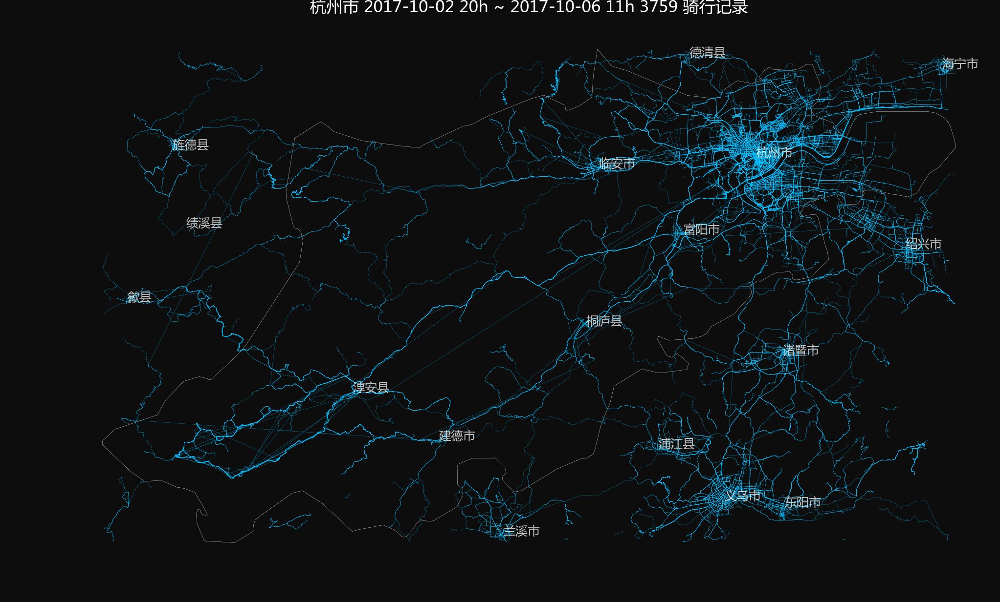
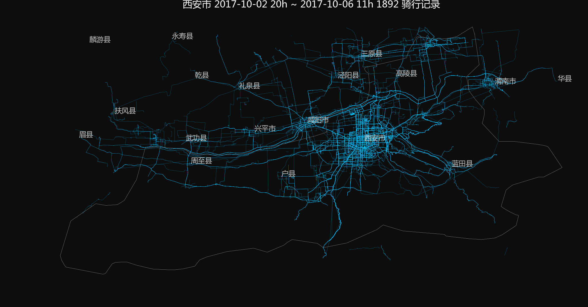

骑行轨迹地图
1 前言
自行车既是通勤工具，也是运动工具，还是观光工具，现如今共享单车的风靡，骑行也堪称为一种时尚。作为一个自行车运动爱好者，又是从事地图相关的工作，作者一直想要制作全国骑行爱好者的运动轨迹图。最近通过一款自行车运动爱好者常用APP的网站，获取到一些骑行运动的轨迹数据，通过简单的数据处理，制作了一系列骑行轨迹地图，包括全国的骑行轨迹概览图，以及各个省会城市骑行轨迹图，与大家分享。
2 数据获取
主要数据有两项，一是全国范围内的骑行轨迹数据，二是各个省会城市的地理范围数据，以及城市点位数据。轨迹数据来源于一款骑行运动APP的网站，获取了2017年10月2日晚8时至6日上午11时的骑行轨迹数据，约18万条记录。全国省会城市地理范围数据和城市点位数据来自于天地图网站的数据接口，获取的城市面状区域以及县级居民点位如图。
3 地图制作
使用matplotlib进行地图绘图和地图标注。
- 地图基本内容：首先绘制省会城市边界，然后按照每个城市的面状区域的包络矩形，绘制完全处于包络矩形范围内的轨迹数据，其范围内县级以上居民点做文字标注
- 地图基本样式：地图背景为黑色；省会城市边界为白色，线宽0.1；轨迹绘制颜色为deepskyblue，线宽为0.1，透明度为0.75；地图标注字体为雅黑，字大为6，颜色为白色，设透明度0.75
4 系列地图
- 全国骑行轨迹概览图
- 省会城市骑行轨迹图（部分）



一共制作了31个省会城市，外加深圳，厦门两个城市地图，鉴于图幅过多，其他城市地图从略。
5 总结与说明
本文介绍了骑行轨迹地图制作的数据来源与基本方法，利用简单的工具制作骑行轨迹图，可以直观的看出骑行爱好者的线路分布热点，同时可以看出邻近城市之间骑行线路及其关联性。
本文对运动轨迹数据初步进行地图可视化，敬请期待后续研究。
联系方式: geoinsights@outlook.com